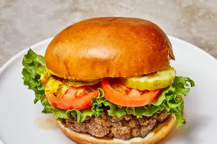

Juiciest Hamburgers Ever

Description
No more dry, lackluster hamburgers. These are juicy, and spices can be easily added or changed to suit anyone's taste. If you find the meat mixture too mushy, just add more bread crumbs until it forms patties that hold their shape.
Ingredients
- 2 pounds ground beef
- 1 egg, beaten
- ¾ cup dry bread crumbs
- 3 tablespoons evaporated milk
- 2 tablespoons Worcestershire sauce
- ⅛ teaspoon cayenne pepper
- 2 cloves garlic, minced
Steps
- Mix the ground beef, egg, bread crumbs, evaporated milk, and spices and seasonings in a bowl using your hands
- Season with Worcestershire sauce, cayenne pepper, and garlic
- Prepare the grill grate by cleaning it and brushing it lightly with oil. Heat a charcoal or gas grill to medium-high heat, then grill the patties on each side (the length of time depends on the level of doneness you're after). If you're making cheeseburgers, add a slice of cheese about a minute before the burger is finished